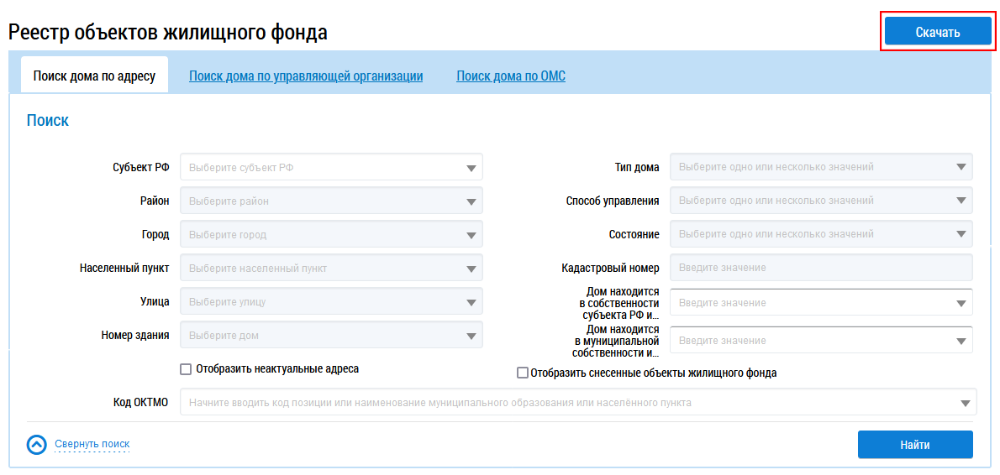
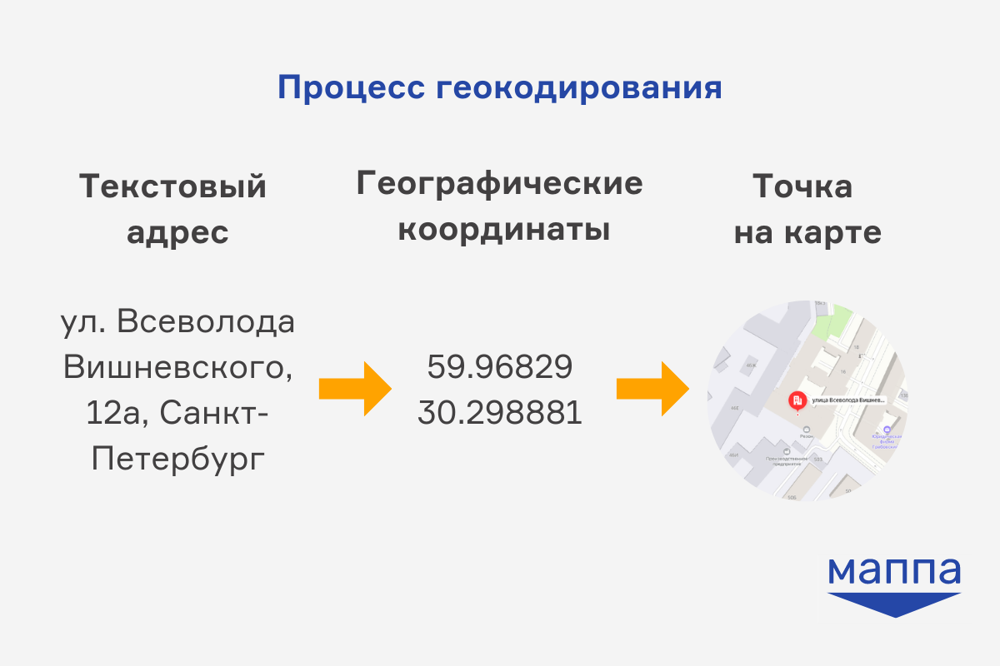
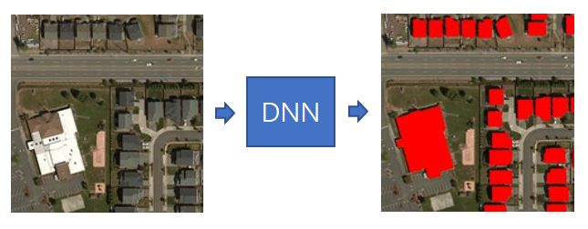
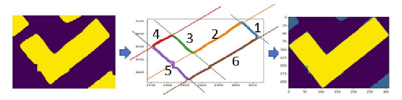

Источники данных о характеристиках застройки
1 ГИС ЖКХ
1.1 Скачивание данных
ГИС ЖКХ - государственная информационная система жилищно-коммунального хозяйства, созданная Минстроем и Минцифры РФ и содержащая в себе данные об объектах жилого фонда.
Официальный сайт: https://portal.dom.gosuslugi.ru/
Реестр объектов жилого фонда, содержащий информацию об объектах государственного учёта жилищного фонда, включая их технические характеристики и состояние: https://dom.gosuslugi.ru/#!/houses
Блок поиска содержит следующие вкладки1:
Поиск дома по адресу;
Поиск дома по управляющей организации;
Поиск дома по ОМС.
Кроме поиска отжельных домов в реестре доступна возможность формирования выгрузки сведений из реестра объектов жилищного фонда в виде архива с файлами выгрузки в формате CSV в разрезе субъектов РФ.
Для скачивания архива нажмите на кнопку Скачать, расположенную над блоком поиска2.

Скачиваемый архив размером порядка 3,7 Гигабайт, так что необходимо будет немного подождать полной загрузки.
После скачивания и распаковки архива вы увидите набор файлов в формате .csv с данными по отдельным регионам.

1.2 Геокодирование
Полученные из ГИС ЖКХ данные не имеют явной географической привязки, а только адрес, поэтому для работы с ними, как с пространственными объектами требуют геокодирования.
Геокодирование - процесс получения географических координат объектов на основе их адресов.

1.2.1 Подготовка адреса к геокодированию
Однако перед геокодированием следует открыть данные и немного их подготовить.
Но для геокодирования необходимо обработать строку с адресом таким образом, чтобы в ней содержалось только название улицы и номер дома, а также выделим название города в отдельную колонку.
Для этого воспользуемся скриптом:
def add_sub_address_column(file_path):
new_file = f"{file_path.split('.')[0]}_sub_address.{file_path.split('.')[1]}"
with open(new_file, "w") as file_write: # открывается поток для записи файла
with open(file_path, "rt") as file_read: # открывается поток для записи файла
# потоки здесь нужны для того, чтобы открытый и записываемый файл в любом случае были закрыты вне зависимости от успешности выполнения
file_write.write(f"Город|Адрес|{file_read.readline().replace(',', '')[1:]}".replace('|', ','))
# чтение заголовка таблицы, добавление в него двух колонок в начале, замена запятых на пробелы, а потом заменя | на запятые
for line in file_read: # для каждой строки в файле
address = line.strip().split("|")[0]
# первый элемент строки
city = address.split(",") # разделение строки по запятым
if len(city) == 4:
city = city[1].strip()
else:
city = city[-3].strip()
try:
city = city.split(".")[1].strip()
except IndexError:
continue
sub_address = [str_.strip() for str_ in address.split(",")[-2:]]
sub_address_str = " ".join(sub_address)
line = ",".join(line.split("|")[1:])
full_line = ",".join([city, sub_address_str, f"{line}"])
file_write.write(full_line)
add_sub_address_column(file_path="путь к вашему файлу")Запустить готовый код можно напрямую из консоли python в QGIS: Модули \(\longrightarrow\) Консоль python.
Консоль будет открыта в нижней части вашего окна QGIS. Для добавления вашего скрипта вы можете нажать на кнопку  .
.
После этого в правой части консоли появится небольшое окно для введения скрипта, в которое вы можете вставить нужный код.

Запуск кода осуществляется по кнопке Выполнить сценарий над вашим скриптом.
Не забудьте вставить в последней строке путь к тому файлу, который хотите обработать!
По результатам обработки в вашей папке с исходным файлом появится новый с названием “Сведения по ОЖФ Адыгея Респ на 23-02-2025_sub_address.csv”.
1.2.2 Геокодирование с использованием модуля MMQGIS
Существует большое количество сервисов геокодирования как с платным доступом, так и бесплатным. В нашем примере мы воспользуемся модулем MMQGIS3 и бесплатным сервисом геокодирования Nominatim4.
Для работы с модулем прежде всего необходимо его установить. Установка может быть осуществлена из репозитория напрямую в программе: Модули \(\longrightarrow\) Управление модулями.

После установки модуль появится в вашей строке меню.
Для геокодирования откроем модуль.

В открывшемся окне необходимо указать путь к файлу для геокодирования, колонки, в которых хранятся адрес и название города, а также путь к файлам для сохранения результатов.
В нашем случае город будет использоваться для повышения точности геокодирования, так как улицы с одинаковыми названиями и номерами домов могут находиться в разных городах.

Обратите внимание, что в результате вы получите векторный файл в формате shapefile (.shp) с точками домов, координаты которых были определены при геокодировании, и текстовый файл в формате .csv для тех объектов, где координаты найдены не были.
Полученный векторный слой будет сохранять в себе все колонки исходного файла, к которым будет присоединена колонка с координатами (latlong).
Результатом геокодирования всегда будет точечный слой, поэтому если вам нужны полигоны домов, то их необходимо получить из другого источника (например, скачать из OSM) и присоединить к ним атрибуты с использованием инструмента Объединить по расположению.
Не забывайте, что shapefile - это коварный формат и вам нужен не только файл с расширением .shp, но и все другие с таким же именем, но другими расширениями.
2 Использование готового набора данных
2.1 Карта возраста домов (How old is this house)
Другим вариантом загрузки возрастов зданий для различных городов является использование готового обработанного набора данных проекта картографического издательства “Кон-Тики”.
В этом проекте собраны из различных источников сведения о возрасте домов для 80 наиболее крупных городов России по состоянию на 2022 год.
Данные можно посмотреть на карте и скачать по ссылке.
Использованные в проекте источники данных показаны в таблице5.
🔢 финальные характеристики здания (цифра означает приоритет)
⏳ временно используемые вспомогательные данные
🗑 данные игнорируются из-за редкости или низкого качества
📍 точка (point)
🟥 контур (polygon / multipolygon)
| адрес | архитектор | геометрия | год | название | стиль | фото | этажность | |
|---|---|---|---|---|---|---|---|---|
| «МинЖКХ» | 3️⃣ | ⏳ 📍 | 4️⃣ | 2️⃣ | ||||
| Минкультуры | 2️⃣ | ⏳ 📍 | 1️⃣ | 3️⃣ | 4️⃣ | |||
| ОСМ | 1️⃣ | 1️⃣ | 1️⃣ 🟥 | 3️⃣ | 2️⃣ | 1️⃣ | 3️⃣ | 1️⃣ |
| Росреестр | 4️⃣ | ⏳ 📍 | 5️⃣ | 🗑 | 3️⃣ | |||
| Викиданные | 🗑 | 2️⃣ | ⏳ 📍 | 🗑 | 1️⃣ | 2️⃣ | 1️⃣ | |
| Викимапия | 🗑 | ⏳ 🟥 | 6️⃣ | 5️⃣ | 5️⃣ | |||
| Викигид | 5️⃣ | 3️⃣ | ⏳ 📍 | 2️⃣ | 4️⃣ | 3️⃣ | 2️⃣ |
Подробнее описание процесса сбора данных описано в статье о проекте.
Если вы достаточно любопытны и не боитесь работать с кодом и командной строкой, то можете попробовать создать аналогичный набор данных для любого города, воспользовавшись инструментом, созданным для проекта.
2.2 Датасет Microsoft building footprints
Microsoft building footprints - это открытый набор данных с местоположением зданий, созданный на основе спутниковых снимков высокого разрешения.
С помощью модели глубокого обучения была выполнена сегментация снимков с выделением контуров зданий, после чего полученные данные были векторизованы.


Данные описаны в документации.
Кроме зданий по снимкам также были распознаны дороги, открытый набор данных с которыми можно скачать из репозитория.
Footnotes
Поиск объектов жилищного фонда - https://cdn.dom.gosuslugi.ru/webhelp/source/public_part/housing_search.html↩︎
Скачивание архива с файлами выгрузки - https://cdn.dom.gosuslugi.ru/webhelp/source/public_part/download_archive.html↩︎
Сайт модуля и подробное описание его функций https://michaelminn.com/linux/mmqgis/↩︎
Ознакомиться с работой сервиса и почитать про него подробнее можно на сайте https://nominatim.openstreetmap.org/ui/search.html↩︎
Источник: https://github.com/kachkaev/tooling-for-how-old-is-this-house↩︎